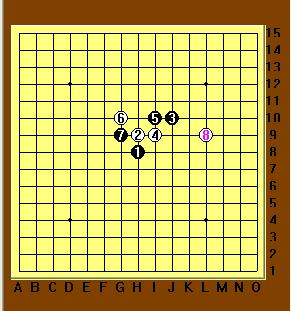
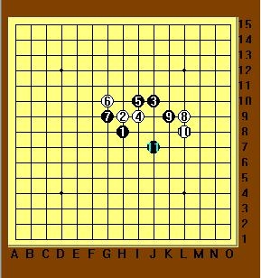
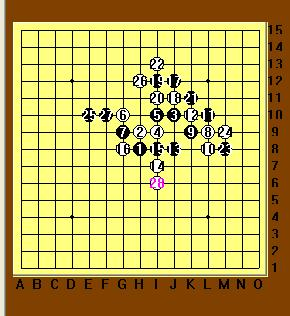
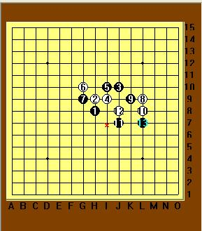
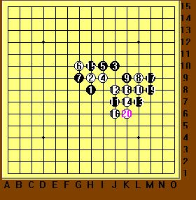
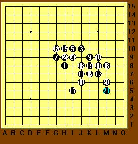
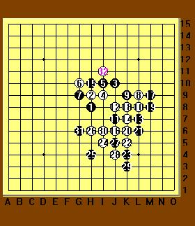
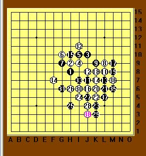
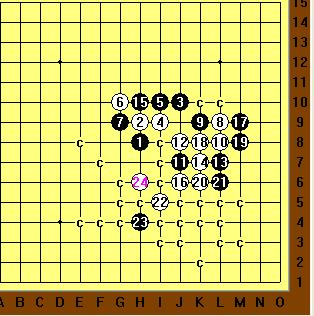

浅谈第六届浙江邀请赛吴镝VS李一
#1 浅谈第六届浙江邀请赛吴镝VS李一 作者：茗弈小刀 发表时间：2009-7-20 13:02:05
由于本人才疏学浅，理解有限，故为浅谈，相信李一老师比赛后会写自己的棋评，那时请大家细看，本文仅供参考笑纳。
2009年7月18号，由浙江省棋类协会主办，浙江省棋类协会五子棋专业委员会承办的第六届浙江五子棋公开赛在风景宜人的杭州开战。我们选其中无镝（执白）和李一（执黑）老师的一局棋看看。

疏星开局，双方避开了常见流行的变化，这个5以前是3打，现在可认为2打，（6在J8比较流行）。这个8比较飘，曾作为一些棋手的研究方向。

9手应该是研究下来的最强点吧。10是必然。11手这里大大出乎我们的意料了！11手我们平日见到的一般在8上边，常见演变如下：

而李一老师这个11无疑让局面显得未知......仔细看看李老师这个11，非常主动的一手棋！既控制了白的要点，自己的黑棋的路子一下子也显得宽敞起来。

12手也很绝！一会我们就知道了。行至13手，表面上黑棋基本控制了下盘，外势也不错。而白看起来比较难受，心里暗自为师傅大鱼捏了把汗。

世界冠军可不是省油的灯，看来我的担忧多余了，现在我们可以看到这个12的妙处了，14，16活三，局面一下峰回路转！至20手白不仅抢得先手做杀，而且又把下边的地盘牢牢掌握于手。这个棋研究过的人都知道，杀在下方，所以下边的空间是关键。如果我们大胆的设想，17档在下边，那么如图：

丢车（JU)保帅（个人理解）白虽然有先手优势，但要杀还是不容易，因为左上有个盘端问题。
回到实战上来，

21--31完成交换，交换下来白并没占到什么便宜，32无奈转防。所以22以后这几手进攻是失败的。现在局面先手又回到黑方手里。执黑者由于开始有惊无险的经历也开始严密谨慎起来：

33手本来可以在31手上边眠三比较好感觉，但李一老师我想此时报求和的心理了，再说时间也不多，所以实战这个33稍微保守。34控制，到38手和棋了。
事后兔子哥哥分析，22手软着，如果这里可以做杀，如图：

不知是大鱼师傅疏忽漏算了还是为参加全锦积蓄力量，嘿，也许正如那句老话“老虎也有打盹的时候”。这里我们衷心祝愿大鱼老师全锦比出好的成绩好的风格，发挥最佳的状态，为我们中国人争光！
也在这里深深感谢，一直以来在爱五子网论坛热忱真心帮助大家的李一老师，您的品德是大家学习的榜样！祝福老师您在每一次比赛中都取得优异成绩！
（最后请李一老师对此棋评批评指正，谢谢。）
［ 有志青年 于 2009-7-20 13:08:47 时奖励此帖[金币加 20 威望加1］
［ 慎独 于 2009-7-20 13:09:34 时花20金币送鲜花一朵］
［ 茗弈总监 于 2009-7-20 13:23:48 时花20金币送鲜花一朵］
［ 茗弈总监 于 2009-7-20 13:24:12 时花20金币送鲜花一朵］
［ 静待花开 于 2009-7-20 13:27:14 时花20金币送鲜花一朵］
［ gerbo 于 2009-7-20 13:55:56 时花20金币送鲜花一朵］
［ 行云流水 于 2009-7-20 17:22:50 时奖励此帖[金币加 20 威望加1］
［ 五子痴 于 2009-7-20 18:58:34 时花20金币送鲜花一朵］
［ 梦婷 于 2009-7-21 0:49:37 时花20金币送鲜花一朵］
［ nara 于 2009-7-22 16:32:23 时花20金币送鲜花一朵］
［ 闫荣辉 于 2009-7-22 17:44:03 时花20金币送鲜花一朵］
［ 梦醉南天 于 2009-7-23 15:28:36 时花20金币送鲜花一朵］
［ 撒蓉儿 于 2009-7-25 10:12:59 时花20金币送鲜花一朵］
［ 撒蓉儿 于 2009-7
#2 Re:浅谈第六届浙江邀请赛吴镝VS李一 作者：茗弈逐曰 发表时间：2009-7-20 13:09:06
学习ing
#3 Re:浅谈第六届浙江邀请赛吴镝VS李一 作者：慎独 发表时间：2009-7-20 13:11:55
祝大鱼在世锦赛取得瞩目的成绩
#4 Re:浅谈第六届浙江邀请赛吴镝VS李一 作者：静待花开 发表时间：2009-7-20 13:26:48
哇！这么快棋评就出来了，刀刀真勤奋，谢谢宝贝与大家分享。#5 Re:浅谈第六届浙江邀请赛吴镝VS李一 作者：茗弈逐曰 发表时间：2009-7-20 13:40:24
学习ed, 大师们下棋一个子都不浪费啊。自己下棋是舍弃一块,开垦一块,没棋再开垦一块,经常是前人栽树，后人乘凉了
#6 Re:浅谈第六届浙江邀请赛吴镝VS李一 作者：日月之合 发表时间：2009-7-20 16:30:51
看棋比自己下快意多了!真好!棋下的好!棋评的也好!
#7 Re:浅谈第六届浙江邀请赛吴镝VS李一 作者：家族粉丝 发表时间：2009-7-20 18:44:49
嗯，这个13必败。#8 Re:Re:浅谈第六届浙江邀请赛吴镝VS李一 作者：wsmwy 发表时间：2009-7-20 18:56:10
引用：13必败？？？那么请教正确的13在？再请见17档反方向怎么杀？
原文由 家族粉丝 发表于 2009-7-20 18:44:49 :
嗯，这个13必败。
#9 Re:浅谈第六届浙江邀请赛吴镝VS李一 作者：聂淼 发表时间：2009-7-20 19:18:12
文不对题，欺骗读者，这哪里是浅谈啊
#10 Re:浅谈第六届浙江邀请赛吴镝VS李一 作者：王志伟123 发表时间：2009-7-20 22:16:56
写的好，顶！就是没钱给小刀姐送花啦［ 茗弈小刀 于 2009-7-20 22:56:46 时花20金币送鲜花一朵］多发帖加威望和金币
#11 Re:浅谈第六届浙江邀请赛吴镝VS李一 作者：兔子哥哥 发表时间：2009-7-22 15:22:27
建议：棋盘可以搞大一些吗，这样的棋子看着实在不舒服，方方的，乱乱的，感觉！
#12 Re:浅谈第六届浙江邀请赛吴镝VS李一 作者：小丸.net 发表时间：2009-7-22 16:51:56
堂堂世界冠军,竟然遭到了近十人的围攻.最后落得近30名的成绩~~~
#13 Re:浅谈第六届浙江邀请赛吴镝VS李一 作者：闫荣辉 发表时间：2009-7-22 17:45:02
暂时忙完了。。。回来啦
#14 Re:浅谈第六届浙江邀请赛吴镝VS李一 作者：屏蔽 发表时间：2009-7-23 13:34:31
棋评尽快吧，这次比赛有点累。
9应该有更好的手法，大概。
13-K7黑棋太苦了，实战的13想激烈一点，说来也是没有办法。15一样的道理，都是避免白棋腾出手来占H11。
17确实是算了半天没看到白棋下面有杀才敢走成这样的。
22冲四就是大鱼漏杀了，27、29唯一
33是我算错想在右边杀才这么走的，不是保守，当时时间不够局面复杂，很难判断G7是否可以出棋。从没想过和棋。棋谱是不是就到38……我们俩都不到5分钟了。
［ 茗弈小刀 于 2009-7-23 15:17:58 时花20金币送鲜花一朵］
#15 Re:浅谈第六届浙江邀请赛吴镝VS李一 作者：茗弈小刀 发表时间：2009-7-23 15:17:47
谢谢李一老师的补充！#16 Re:浅谈第六届浙江邀请赛吴镝VS李一 作者：妙玉偷星 发表时间：2009-7-28 18:18:33
12手很隐蔽,喜欢